The Men Who Own Kazakhstan
Data Analyst & Visualization Specialist

I turn data into stories. Over 5 years I've built analytical pipelines for fintech companies, insurance risk dashboards, and public-sector data systems — always making complex data readable for decision-makers. My research on Central Asian demographics, economics, and geography has been published in Kursiv, Tengrinews, The Steppe, and 15+ major outlets. MSc in Computer Engineering.
Al-Farabi Kazakh National University — ranked #1 in Central Asia and #163 globally (QS World University Rankings)
Studied algorithms, databases, software engineering, and computer networks. During an applied internship, built a unified data infrastructure and automated daily reporting system for companies in the housing & construction sector — consolidating fragmented data sources into a single operational database used by management teams.
Student of the Year 2021, Faculty of IT. Regular HackDay & hackathon participant. Volunteer at Red Crescent Kazakhstan; green energy project for remote regions; Grow Your Own Food — urban gardening platform for students.
Thesis: Creation of an effective image processing algorithm based on an ensemble approach. Published in a KKSN-indexed journal — Kazakhstan's list of top-tier peer-reviewed publications. Research focused on combining multiple ML models into ensemble pipelines to improve accuracy and robustness of computer vision tasks.
Creation of an effective image processing algorithm based on an ensemble approach — published in a KKSN-indexed journal. ResearchGate →
Worked with large companies across multiple industries — analyzing operations, forecasting trends, and surveying staff and clients. Built Power BI dashboards and automated Python reports that replaced manual Excel reporting and gave management weekly KPI visibility.
Contributed to building an automated credit scoring system processing 10,000+ applications per day nationwide — replacing manual review with instant online decisions. Non-performing loans decreased by 40% following model deployment.
Redesigned service workflows for local government bodies covering water supply, heating, electricity, and cadastral services. Connected citizens, akimats, and 200+ organizations on one platform. 60% of requests moved online within 3 months of launch.
Analyze insurance datasets to support decisions across underwriting, sales, and risk. Built a geospatial risk model that helped avoid dangerous coverage concentrations — resulting in +23% revenue improvement in targeted cities. Identified underperforming agents, contributing to a +30% branch revenue increase after corrective action.
The Men Who Own Kazakhstan
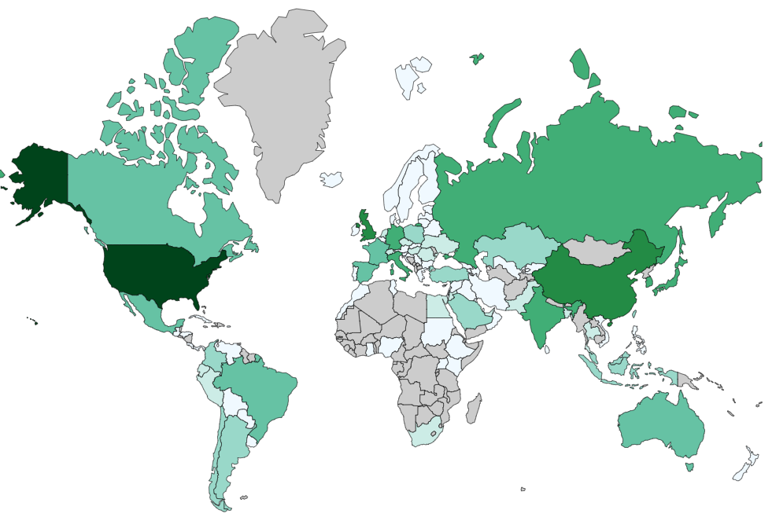
Top Universities by Continents
Kazakhstan Labor Review

Dope Soz Podcast Analytics
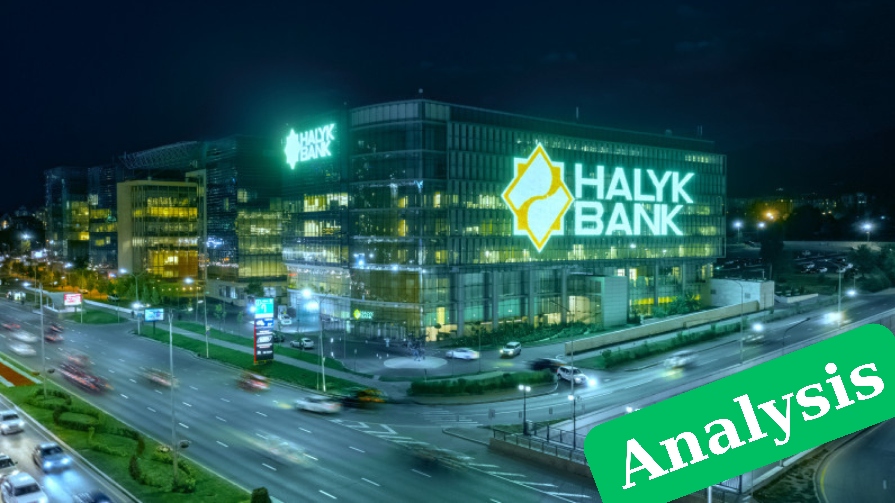
Kazakhstan Banking Sector
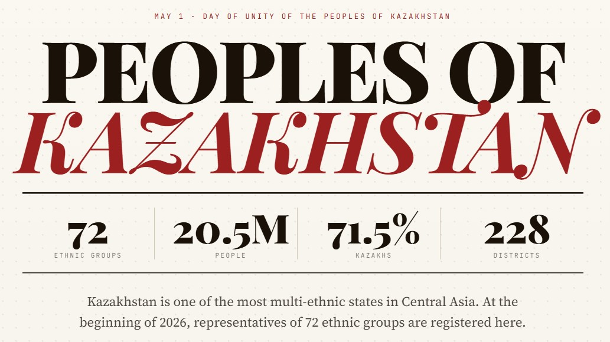
Peoples of Kazakhstan
.jpg)
Wages of Kazakhstanis
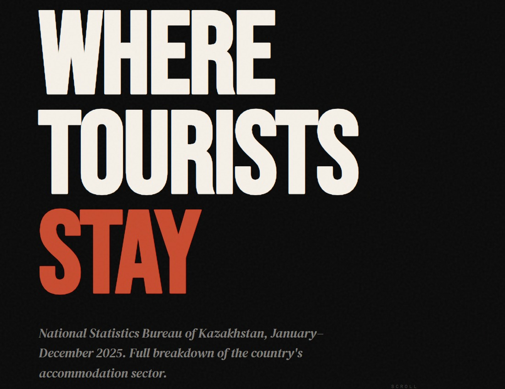
Kazakhstan Hospitality Report 2025
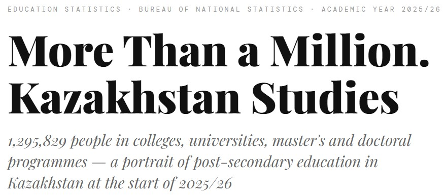
Higher Education in Kazakhstan
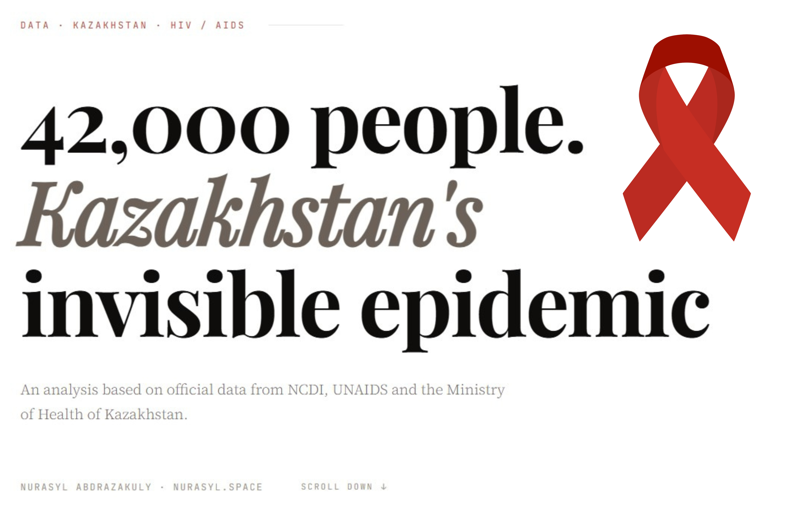
HIV in Kazakhstan
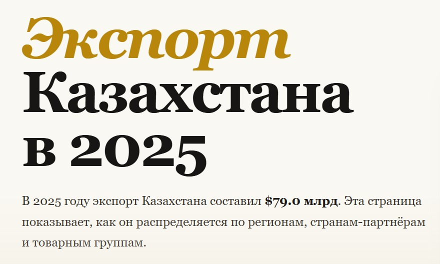
Kazakhstan Exports 2025
Top Universities by Continents

Most Popular Newborn Girl Names in Kazakhstan (1991–2024)

Hourly Salary by Age in Kazakhstan

Ethnic Diversity in Kazakhstan

Age Distribution of Kazakhstan's Population

Top Newborn Boys’ Names in Kazakhstan (2024)

Riverside cities of Kazakhstan

The Golden Square, Almaty

Surface Water in Central Asia

Birth rate in Kazakhstan (2024)

Birth Rate Change

Kazakhstan Budget 2026

Mean Age by District

Divorce Rate in Kazakhstan (2024)

Food Price Changes in Almaty

Brain Drain Index (2024)

Purchasing Power of KZT

Average Monthly Wage (USD)

Kazakhstan’s City Name Meanings

Almaty’s GDP Compared to the World (2024)
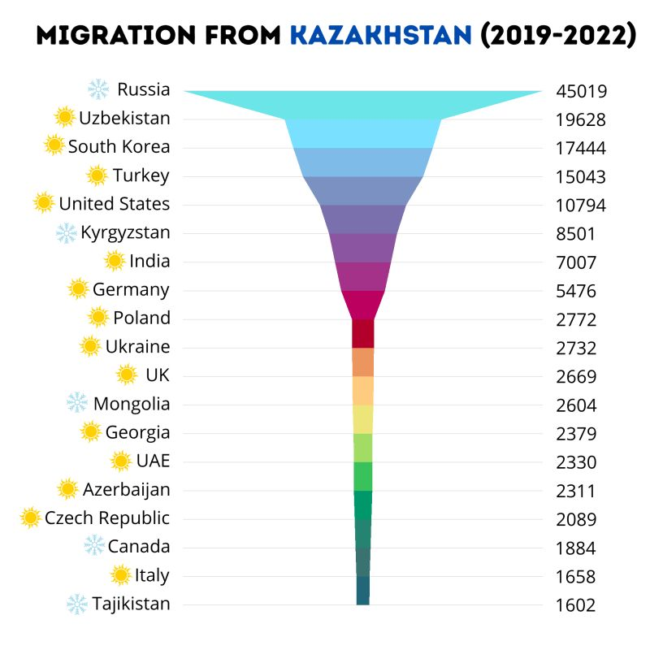
Kazakhstan Migration & Climate

Sunset Time in Kazakhstan

Daylight in Kazakhstan

Air Quality in Almaty

Embassies of Kazakhstan

Embassies in Astana

International Students

Students by Age

Academic Staff

Car Ownership

Working-age Population

Honey Production

Students

Trade Balance

Passport Power

Toponymy

Uzbekistan Trade

World Leaders

Winter Olympians

KZ Diaspora USA

Flight Routes

Air Quality

Bank Profits

Climate Change

Daily Births

Birth Seasonality

Population Density

Landlocked GDP

Wealth Distribution

Insurance Profits

Financial Sector

South America GDP

Olympics Bonuses

Cost of Living

Purchasing Power

Income Inequality

Ramadan Duration

Central Asia USA

Europe Latitude

North America Latitude

World Capitals

Box Office 2025

Trade 2025

Imports 2025

Future Professions

Foreign Postgraduates

Teen Birth Trends

Ethnic Composition

Sunrise Time in Kazakhstan

Public Transport Network

Public Transport Density

Coldest Capitals

Wind Rose of Kazakhstan

Almaty Daylight Curve

Almaty Mountain Glaciers

Building Heights in Astana

Emigration from Kazakhstan (2000–2024)

Dollar Billionaires in Kazakhstan

Most common farm animal in Kazakhstan

Kazakhstan Marriage by Age & Sex (2022)
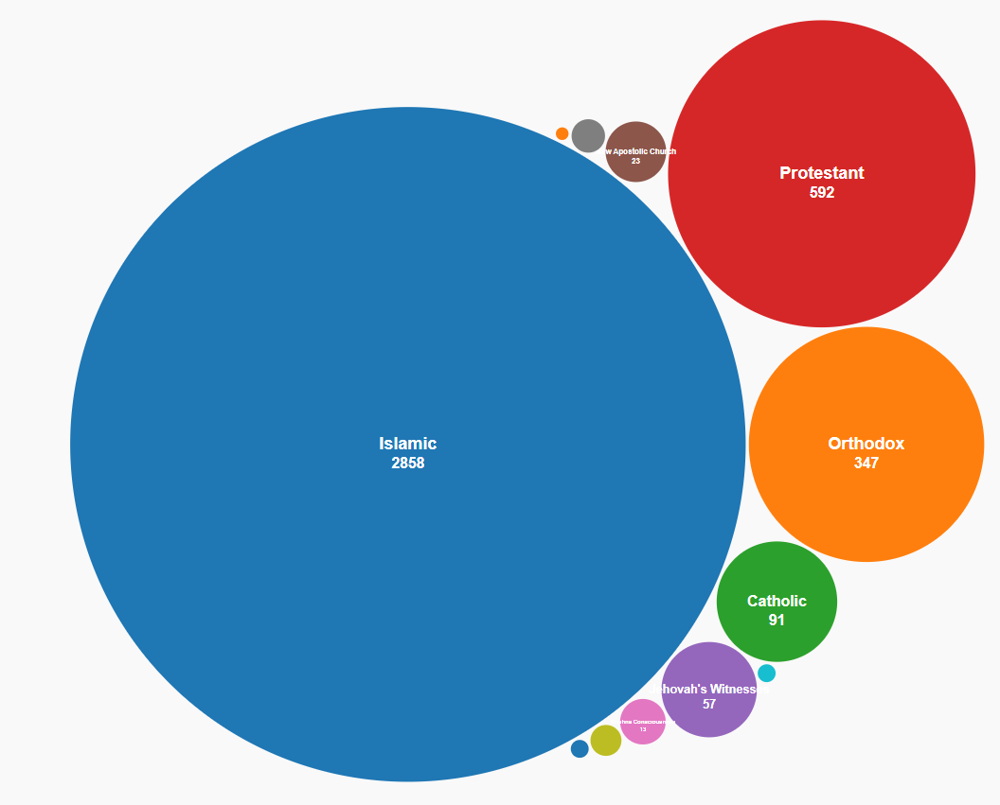
Religious Organizations

Kazakhstan’s Regional Economy, 2024

VAT in Europe

Almaty Flats by Rooms

Built Living Area in Kazakhstan

Housing Completions in Almaty

European Cities at Kazakhstan’s Latitude

Top Investor Countries in Kazakhstan (2004–2024)

The Kazakh Diaspora

Post-Soviet Demographic Gap

Gender Balance by Region

Longevity in Kazakhstan

Dinosaur Fossils in Kazakhstan

Hiking Routes in Almaty

Population by Generation

Age–Sex Change in Almaty

Median Age by Region

Annual Mean Temperature

Night Lights of Kazakhstan

Caspian Sea Bathymetry

Consulates in Almaty
.jpeg)
Monthly Car Accidents

Almaty Temperature Anomalies

Average Salary in Kazakhstan

Caspian Sea Ship Activity

Gold Reserves Change
.jpeg)
Vehicle Ownership in Kazakhstan

Top 10 Richest People in Kazakhstan (2025)

Nearest Foreign Capital to Kazakhstan
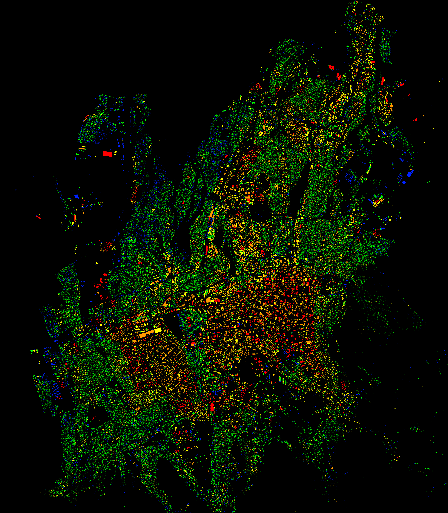
Structure of Almaty Buildings

Most Popular Boys’ Names in Kazakhstan (2024)

Bathymetry of the Caspian Sea

European Countries Smaller than European Kazakhstan

Most Populous Cities in Central Asia (2025)

Post-Soviet Economies: 30 Years of Change

Population by Generation in Kazakhstan

Top Newborn Names in Kazakhstan (2024)

Google Play Store Data Analysis

Green Cover Change in Almaty (2005 → 2025)

Share of the Altai Mountains

Kazakhstan Population Banana

Gender Balance in Kazakhstan

Age-sex Pyramid of Kazakhstan (2009–2025)

Most Popular Meats in Kazakhstan
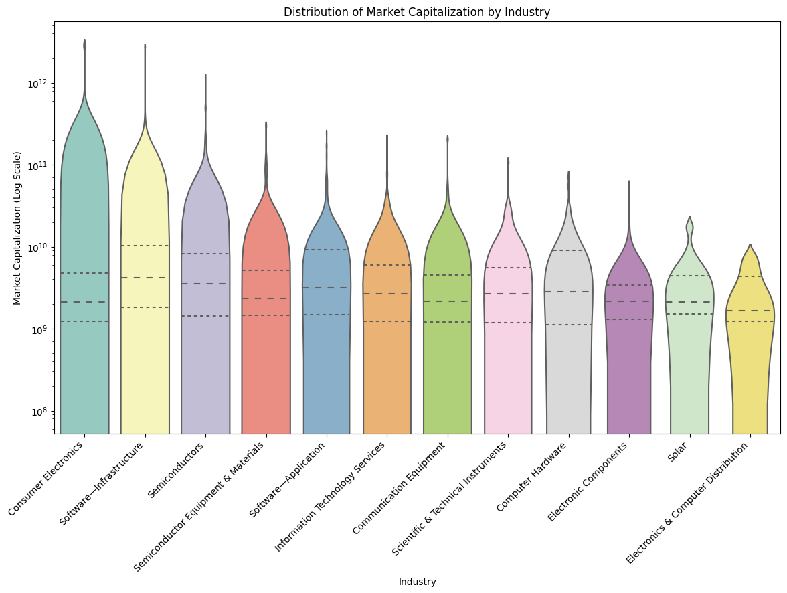
Market Capitalization Analysis

Kazakhstan Top Trade Partner by Region 2024

Paris 2024 Olympics Medals Analysis

Nuclear Explosions in Kazakhstan

Vegetable Market Analysis

FC Kairat in UEFA Champions League
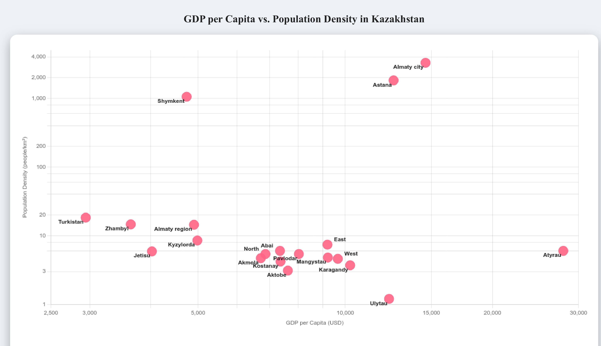
GDP per Capita vs. Population Density

Central Asian Largest Stadiums

Schengen Visa Refusal Analysis

Day and Night Cycle in Kazakhstan
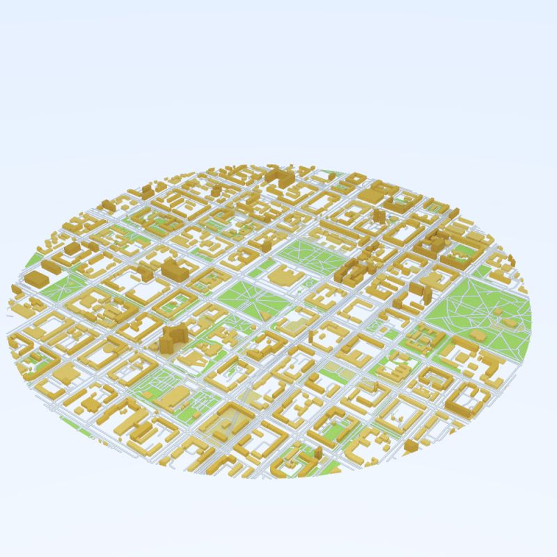
3D view of central Almaty
.jpeg)
Top Banks of Central Asia by Total Assets (2025)
.jpeg)
Highest Points of the World’s Countries (2025)

Kyrgyzstan’s Trade Structure – 1st Half of 2024

Tokayev’s Foreign Visits

Top 50 Largest Private Companies in Kazakhstan (2024)

What powered Kazakhstan in 2024
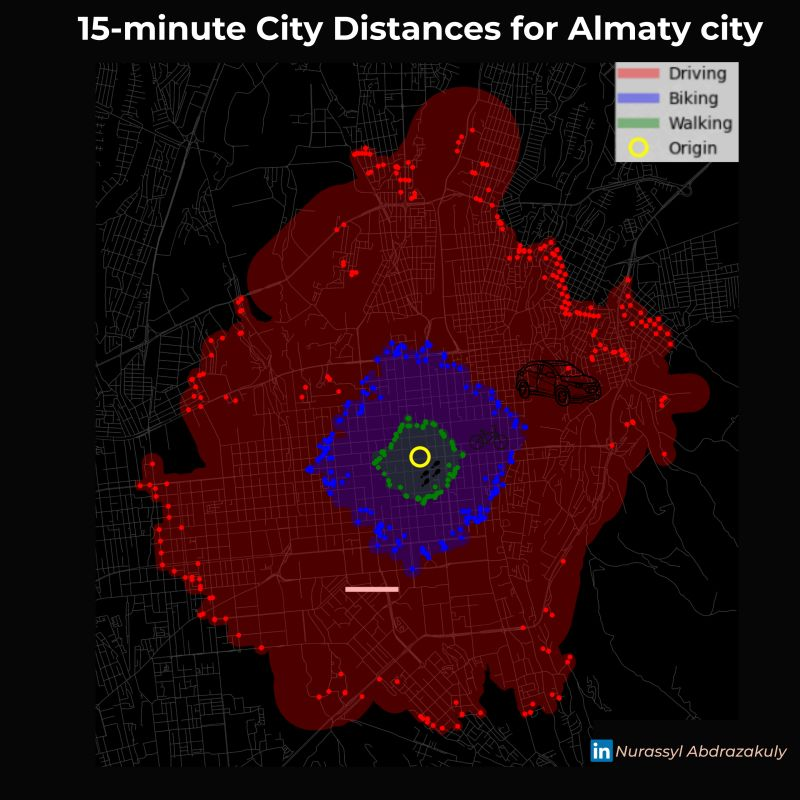
15-Minute Mobility in Almaty

Visitors to Kazakhstan by Citizenship (2024)
.jpg)
October Heatwave in Almaty (2025)

Kazakhstan’s Economy vs Neighbors (2025)

European Passport Rankings

Kazakhstan Age-Sex Pyramid
.jpg)
Religious Buildings in Kazakhstan

Population Along the Mediterranean

Almaty Region Roads in 3D
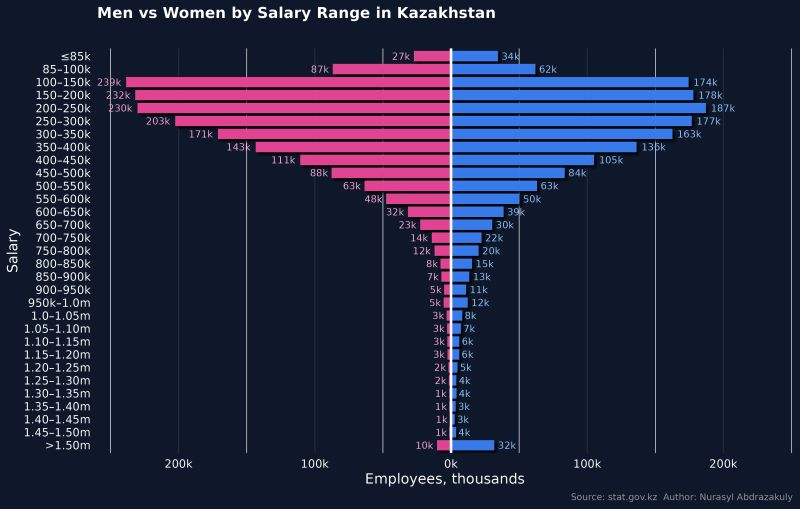
Gender Pay Gap in Kazakhstan
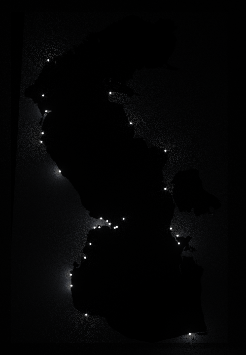
Lighthouses on the Caspian Sea

Global Interest Rate Leaders 2025
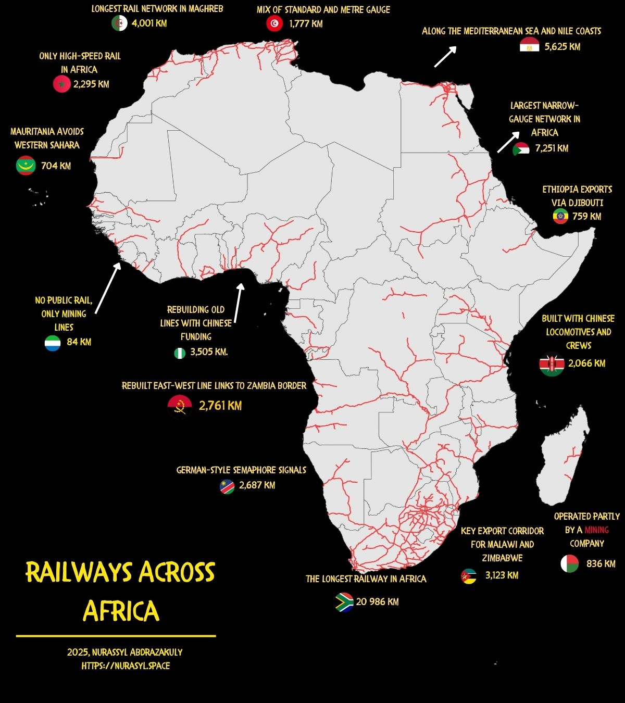
Railways Across Africa

Electricity Generation in Central Asia
%20KYRGYZSTAN.png)
Earthquakes in Kyrgyzstan

Ethnic Diversity in Kazakhstan
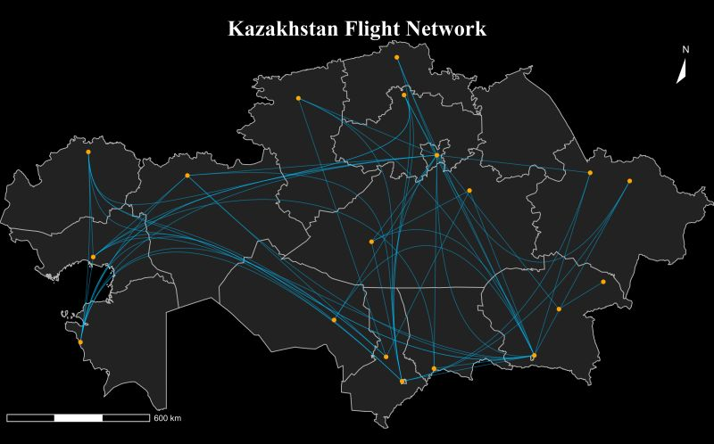
Kazakhstan Flight Network

Top words from Tokayev’s UNGA 2025 speech

Chemical Elements in Kazakhstan

Tree Canopy Height Analysis in Almaty

Earthquake Analysis in Kazakhstan (1924–2024)

Renewable Energy Share in Europe (2022)

National Composition Timeline

Urban Visualization of Almaty

Climate Change in Almaty (1875–2023)

Street Network Analysis of Almaty

Green Spaces in Almaty

Almaty Population Density Map
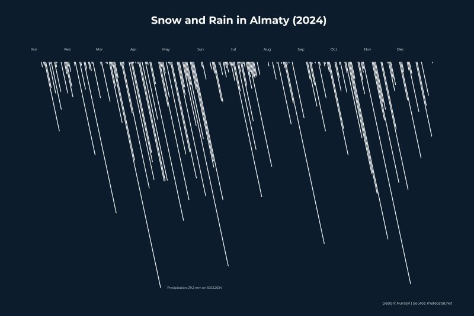
Snow and Rain in Almaty

Polar Road Network Analysis

EU Citizenship by Kazakhs

Population change map of Kazakhstan

Carbon Emissions Map of Kazakhstan

Habitability Map of Kazakhstan

Population Density Map of Kazakhstan (April 2024)

District Population Density Map of Kazakhstan

3D Population Density Map of Kazakhstan
Caspian Sea Shipping Map
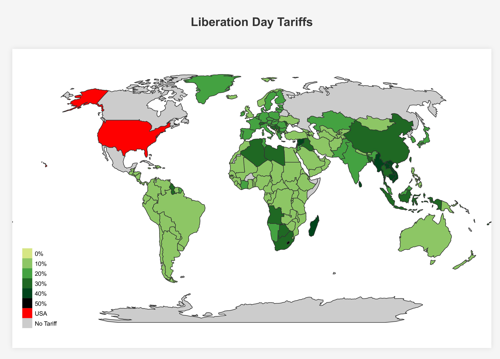
Liberation Day Tariffs Choropleth
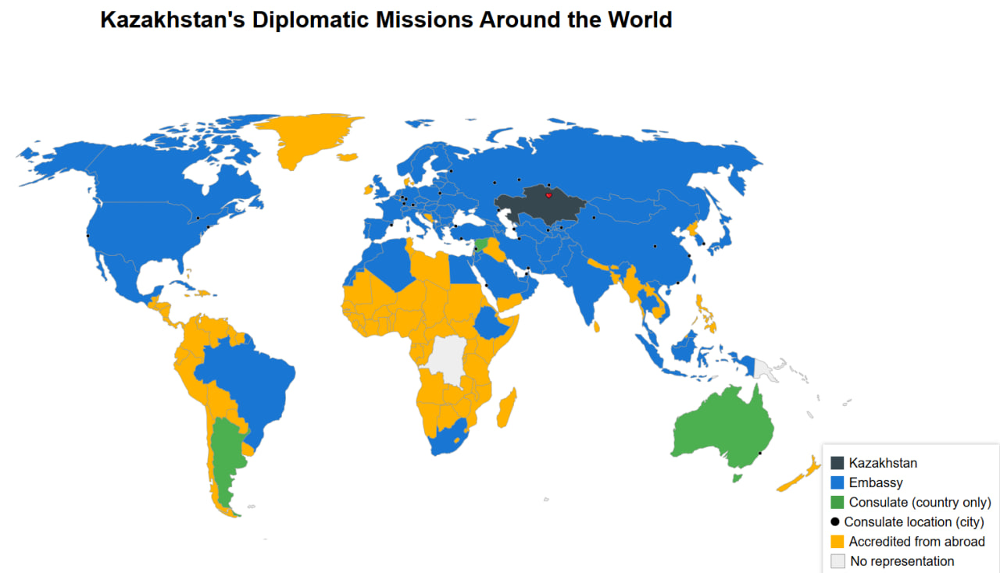
Diplomatic Missions of Kazakhstan
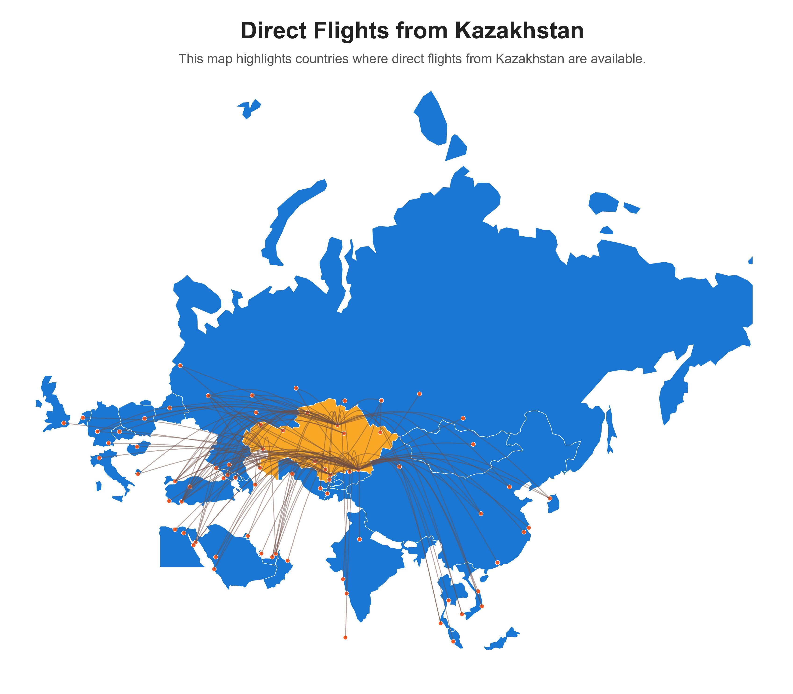
Direct Flights from Kazakhstan
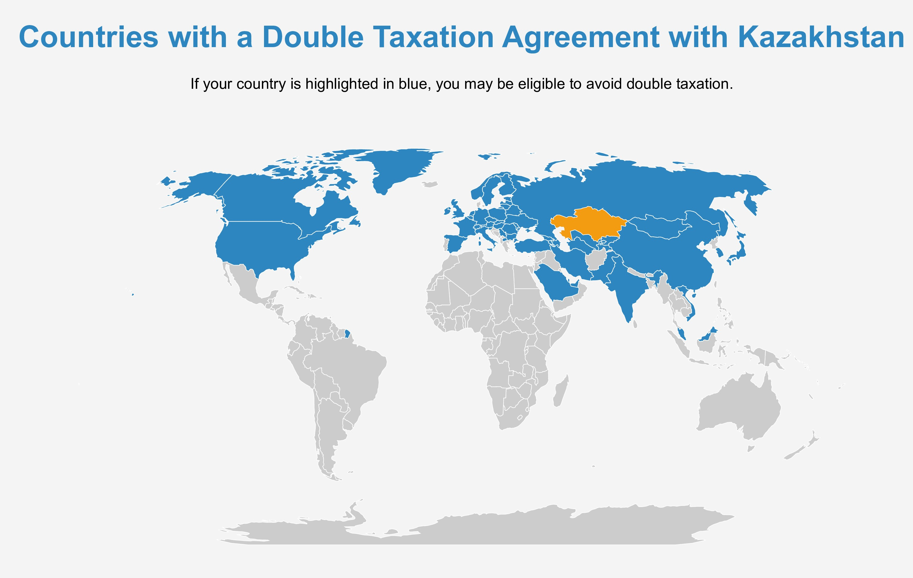
Double Taxation Agreements

Birth Rate in Kazakhstan (2023)

Precipitation Map of Kazakhstan

Kazakhstan Railways Map

Kazakhstan Gender Dominance Map

Percentage of Kazakhs by District in Kazakhstan

Ethnic Majorities in Kazakhstan

Chronology of Earthquakes in Kazakhstan

Power Plants in Kazakhstan

3D Map of Rivers and Terrain in Almaty Region

Natural Population Growth in Kazakhstan (2023)

Population Dot Density Map of Kazakhstan

3D Relief Map of Almaty Region

River Systems of Kazakhstan

Source: NASA - National Aeronautics and Space Administration

Road Network of Kazakhstan

River Basins and Watersheds of Kazakhstan

Urban Expansion of Almaty

Youth Demographics Map

Elderly Demographics Map

Hydrologic Map of Kazakhstan

Cattle in Kazakhstan

Horses in Kazakhstan

Goats & Sheep in Kazakhstan

Poultry in Kazakhstan

Pigs in Kazakhstan

Camels in Kazakhstan

Livestock Leaders in Kazakhstan

Population Distribution in Kazakhstan (50/50)